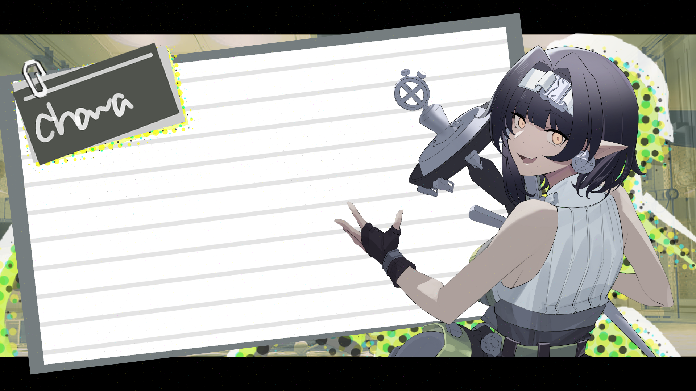

Project Three Fates
Project Three Fates
Project Three Fates

[Try Press Space]
Project Three Fates is a prototype game concept that oriented around the three goddesses of fate in Greek mythology. The character here is Clotho, the eldest among the sisters. She wields a spindle to spin the thread of life of new-born mortals, defining their nature and essence, including personality, characteristic, and gender.